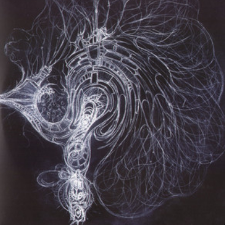
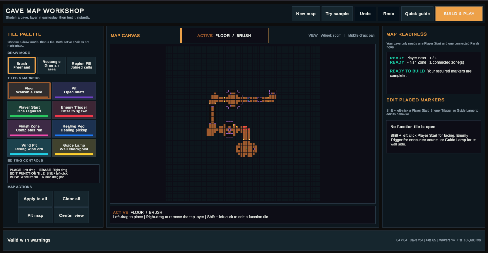

Noam
Falber
Developer Technical Artist
I build ambitious game systems, then make them practical to use, profile, and ship.
Go-to toolkit C# · Unity · MonoGame

Developer Technical Artist
I build ambitious game systems, then make them practical to use, profile, and ship.
Go-to toolkit C# · Unity · MonoGame

About
Give me a problem that needs both code and visual thinking. I do my best work when I’m learning something new and pushing through the hard technical problems until the idea becomes a system that makes the whole game better.
Art is part of that process. Understanding the visual target and the person using a tool leads to better technical decisions. I thrive in teams where developers, artists, and designers shape the result together.
View selected projectsSelected work
Project visual
Rendering and interaction highlightsProject visual
Map building and playtesting

Project breakdown
01 · Bounded world streaming
02 · Grass rendering
03 · Persistent interaction
04 · Volumetric clouds and lighting
05 · WebGPU release
06 · Release evidence
These results were recorded at 960 × 600 on a Ryzen 7 3700X and RTX 3070. Each cold workload ran three times. Browser cadence is reported separately from the time Unity needed to prepare a frame.
01 · Runtime conversion
02 · Runtime map authoring
03 · Runtime generation
04 · Browser release
05 · Reliability evidence
Runtime NavMesh baking remains a meaningful synchronous generation cost. The workshop checks map complexity before building and reports progress through each stage.